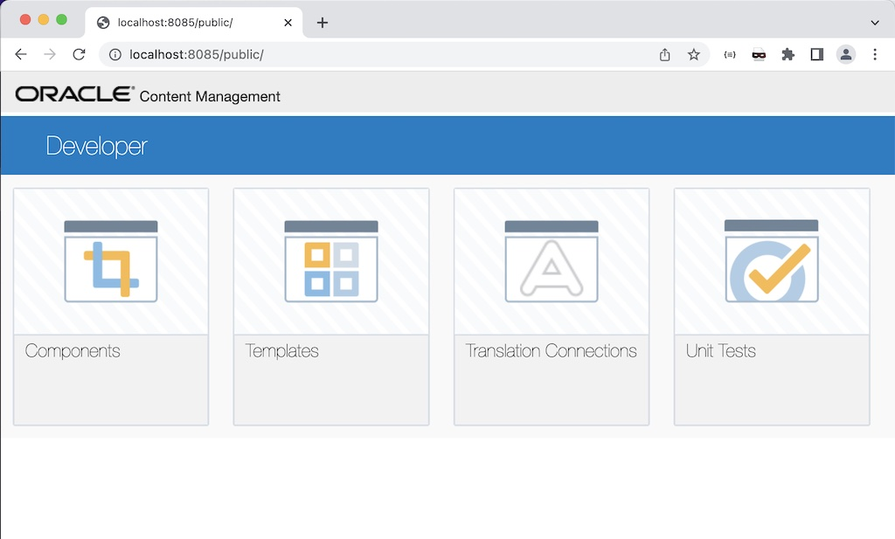
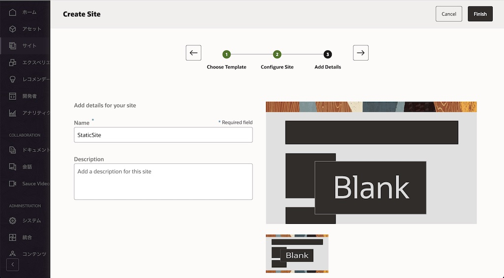
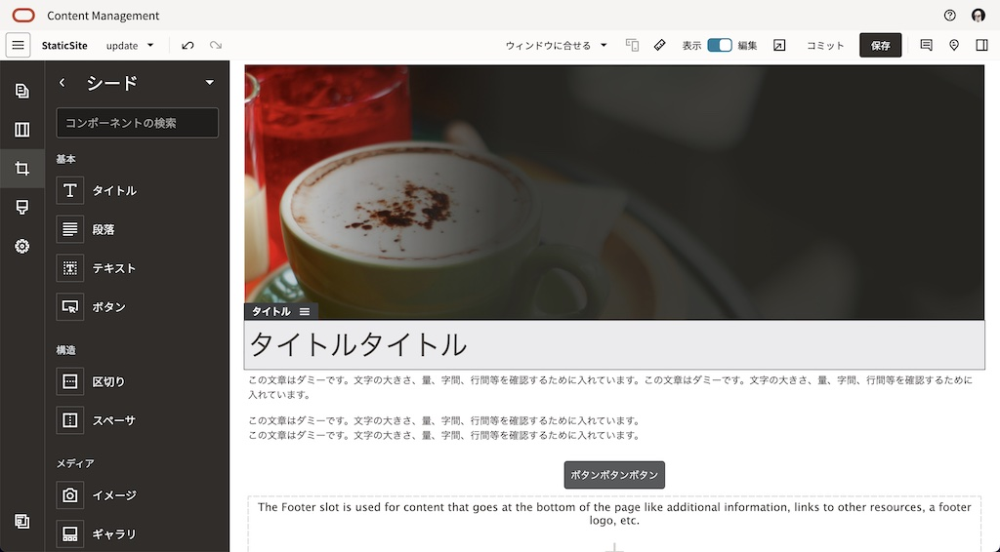
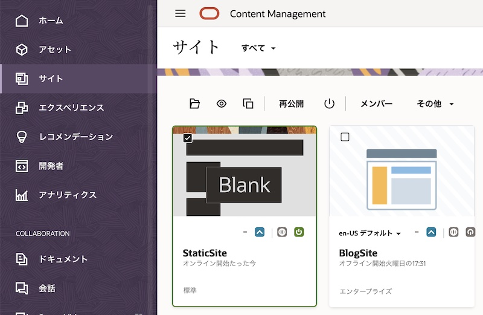
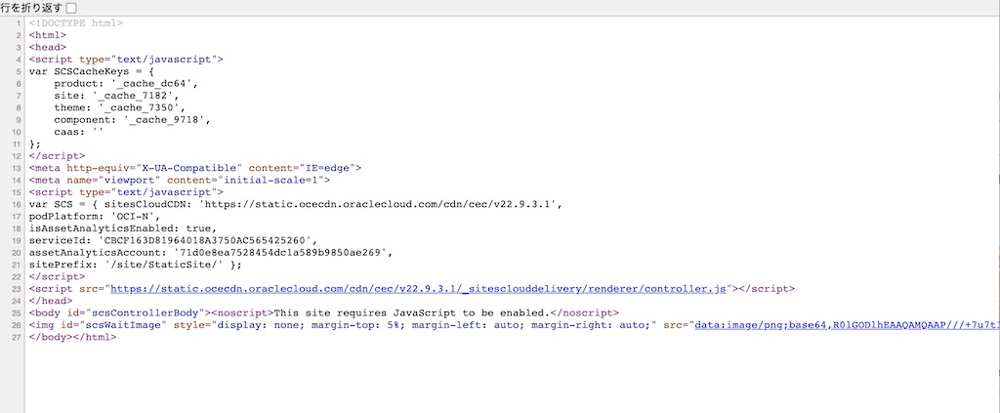
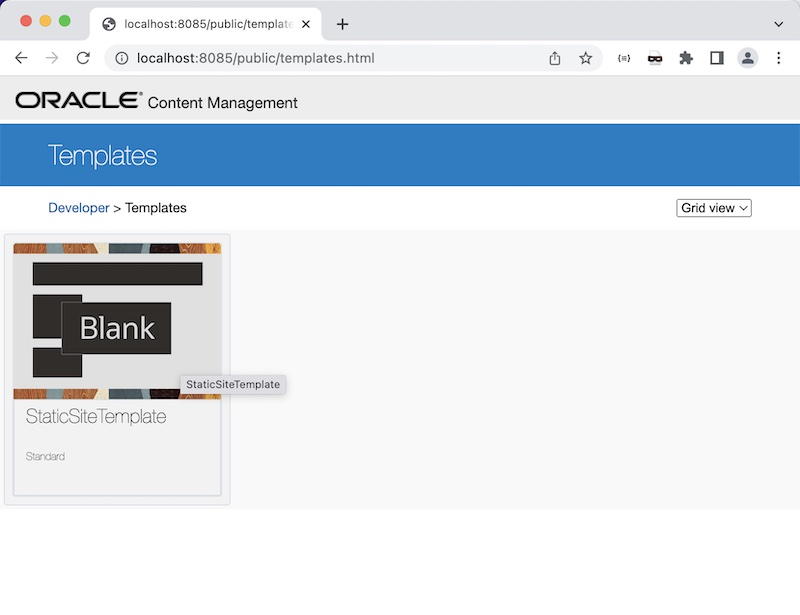
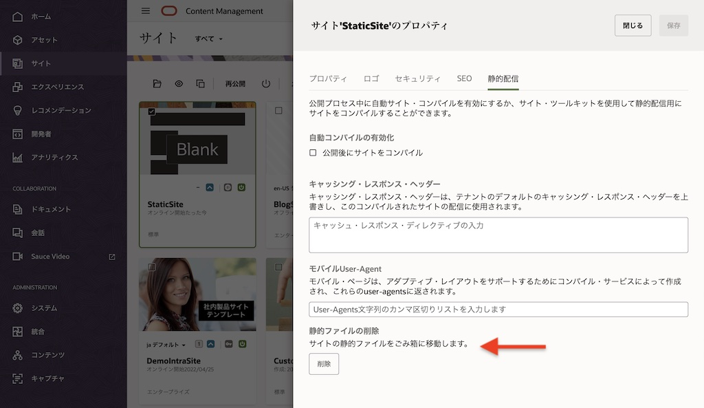
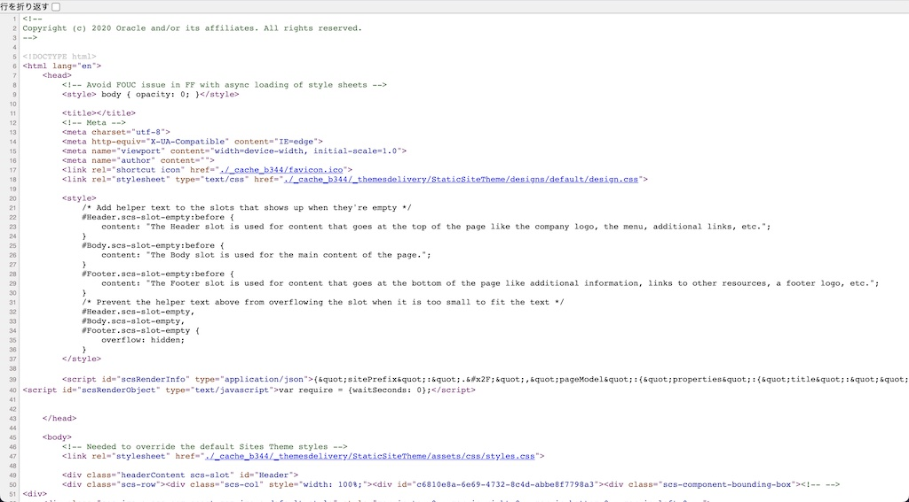
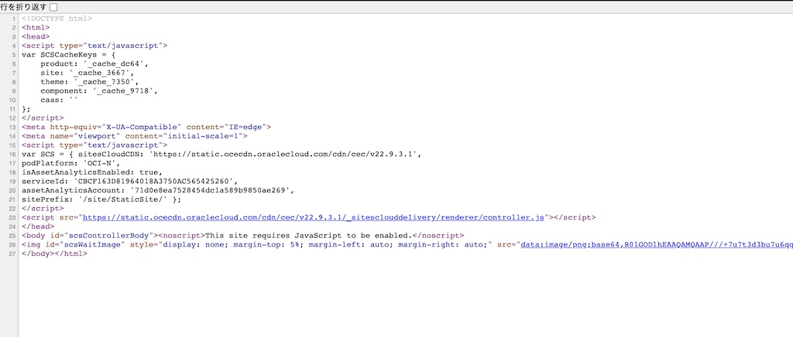

このチュートリアルは、Oracle Content Toolkitを利用したOCMで作成・公開したサイトをコンパイルする手順について、ステップ・バイ・ステップで紹介するチュートリアルです。
【お知らせ】
この文書は、2022年10月時点での最新バージョン(22.9.3)を元に作成されてます。
チュートリアル内の画面ショットについては Oracle Content Management の現在のコンソール画面と異なっている場合があります。
0. 説明
Oracle Content Toolkit
Oracle Content Toolkit（Content Toolkit）とは、OCMに対してコマンドを実行できる コマンドライン・ユーティリティ で、主にサイト・テンプレート、テーマ、カスタム・コンポーネントおよびコンテンツ・レイアウト等を開発する際に利用します
Content ToolkitはGitHub上で公開されており、誰でも利用することができます。詳細はGitHub上のREADME.md、および以下の製品ドキュメントをご確認ください
- GitHub
- 製品ドキュメント
サイトのコンパイル
OCMのサイトをコンパイルすると、静的HTMLファイル をサイトの各ページに作成します。これによりサイト・ページの実行時パフォーマンスおよび動作の改善が期待できます。通常（デフォルト状態）のOCMのサイトページのレンダリングと、コンパイルされたサイトページのレンダリングの違いは以下の通りです（※GitHubより引用）
-
通常（デフォルト状態）のサイトページのレンダリング

-
コンパイルされたサイトページのレンダリング

サイト・コンパイルの概要については、以下ドキュメントもあわせてご確認ください
- GitHub
- 製品ドキュメント
1. 前提条件
-
Oracle Content Management インスタンスを作成する または OCI IAM Identity Domain環境でOracle Content Managementインスタンスを作成する のどちらかの手順によりOCMインスタンスが作成されていること
- OCMの利用ユーザーに、少なくとも下記4つのOCMインスタンスのアプリケーション・ロールが付与されていること
- CECEnterpriseUser
- CECDeveloperUser
- CECRepositoryAdministrator
-
CECContentAdministrator
[Memo]
ユーザーの作成とアプリケーションロールの付与手順は、Oracle Content Management インスタンスの利用ユーザーを作成する をご確認ください。
- OCMのサービス管理者により、デフォルト・テンプレートがインストール済 であること。また、デフォルト・テンプレートの BlankTemplate がユーザーに共有されていること
なお、必須ではないが、事前に以下チュートリアルを実施済みで、OCMのサイト作成機能の利用方法を理解していることが望ましい
2. Content Toolkitのセットアップ
ローカル環境にContent Toolkitをセットアップし、OCMインスタンスのサーバ登録を行います
2.1 Content Toolkitのセットアップ
こちらのセットアップ手順に従い、Content Toolkitをローカル環境にセットアップします
セットアップ完了後、cec -v を実行すると、以下のようにバージョンが表示されます
$ cec -v
22.9.3
2.2 ソースディレクトリの作成
こちらの手順に従い、ローカル環境の任意のフォルダに、開発中のソースを保管するフォルダを作成します。ここでは、ユーザーディレクトリ直下に cec-src を作成し、インストールを実行します
$ cd
$ mkdir cec-src
$ cd cec-src
$ cec install
インストール完了後、cec develop を実行し、開発環境を立ち上げます。
出力メッセージの Toolkit local server: http://localhost:8085 のURLをブラウザで開きます。以下のような画面が表示されることを確認します

2.3 OCMインスタンスを登録する
こちらの手順に従い、ローカル環境でのテスト時に利用するOCMインスタンスを登録します。
ここでは UAT という名前で利用するOCMインスタンスを登録します
cec-src ディレクトリに移動し、以下コマンドを実行します
$ cd cec-src
$ cec register-server UAT -e https://your-ocm-instance.com -u <ユーザーID> -p <パスワード>
登録結果を確認します。登録したOCMインスタンスのテンプレートやテーマ、リポジトリなどが表示されます
$ cec list --server UAT
3. サイトのコンパイル
Content Toolkitを利用したサイト・ページをコンパイルするには、以下の手順となります
- OCMで作成・公開したサイトをテンプレートとしてエクスポート
- Content Toolkitを使用してテンプレートをコンパイル
- 元のサイトに生成された静的ページをアップロード
3.1 OCMで作成・公開したサイトをテンプレートとしてエクスポート
3.1.1 OCM上にサイトを作成・公開
【Memo】
OCMを利用したサイト作成方法は、以下チュートリアルを参考に作成してください
サイトの作成（Oracle Content and Experience のサイト機能を使ってみよう）
-
OCMのサイト作成画面(SiteBuilder)を利用し、サイトを作成します。ここでは、事前定義済みテンプレートの BlankTemplate から StaticSite をスタンダードサイト（標準サイト）で作成します

-
サイトを編集します。ここでは、タイトル、段落、ボタン、画像などを適当に配置し、ページを編集します

-
保存→コミット で編集内容をベースサイトに反映します
-
StaticSiteを 公開→オンライン にします

-
公開サイトを開き、右クリック→「ページのソースを表示」を確認します。コントローラーファイル
controller.htmlの内容が表示され、実際表示されるHTMLのソースは表示されません
3.1.2 OCM上のサイトをテンプレートとしてエクスポートする
-
ローカル環境で、2.2項で作成したソースディレクトリ cec-src を開きます
-
以下のコマンドを実行し、OCM上の StaticSite からローカル環境にテンプレートを作成する。テンプレート名は StaticSiteTemplate とします
$ cec create-template StaticSiteTemplate --site StaticSite --server UAT -
ローカル環境にテンプレートが作成されたか？を確認します。cec develop を実行し、開発環境を立ち上げます。http://localhost:8085 を開き、Templates をクリックします。StaticSiteTemplate が存在することを確認します

3.2 Content Toolkitを使用してテンプレートをコンパイル
ローカル環境に作成したテンプレート（StaticSiteTemplate）をコンパイルします。
-
以下のコマンドを実行します
$ cec compile-template StaticSiteTemplate -
コンパイルが完了すると、cec-src/src/templates/StaticSiteTemplate/static 配下に静的HTMLが出力されます
3.3 元のサイトに生成された静的ページをアップロードする
作成された静的ページを、元のサイトにアップロードします
-
以下のコマンドを実行します
$ cec upload-static-site-files src/templates/StaticSiteTemplate/static --site StaticSite --server UAT -
OCMのWebUIを開きます。サイト→StaticSite→プロパティ→静的配信→静的ファイルの削除 に「サイトの静的ファイルをごみ箱に移動します」が表示され、静的ファイルが存在することが確認できます

-
StaticSite を公開（再公開）します。今回はContent Toolkitを使って公開します
$ cec control-site publish --site StaticSite --server UAT --staticonly -
公開サイトを開き、右クリック→「ページのソースを表示」を確認します。3.1.1項で確認したコントローラーファイル controller.html の内容は表示されず、HTMLソース が表示されます

3.4 アップロードした静的ページを削除する
アップロードした静的ファイルを削除するには、以下のコマンドを実行します
$ cec delete-static-site-files StaticSite --server UAT
もしくは、サイト→StaticSite→プロパティ→静的配信→静的ファイルの削除 より、「削除」 ボタンをクリックします
静的ファイルを削除した後は、サイトの再公開を実行します。公開サイトを開き、ページのソースを確認します。元通り controller.html ファイルの内容が表示されルことを確認します

4. おわりに
このチュートリアルは、Content Toolkitを利用したサイト・コンパイル方法について紹介しました。今回紹介した方法は、基礎的な内容になりますので、以下関連するドキュメントもあわせてご確認ください
- Compile a Site to Improve Runtime Performance for Site Pages (※日本語翻訳版)
- Pre-Compile Sites
- Compile and Publish Sites with Oracle Content Management
以上でこのチュートリアルは終了です